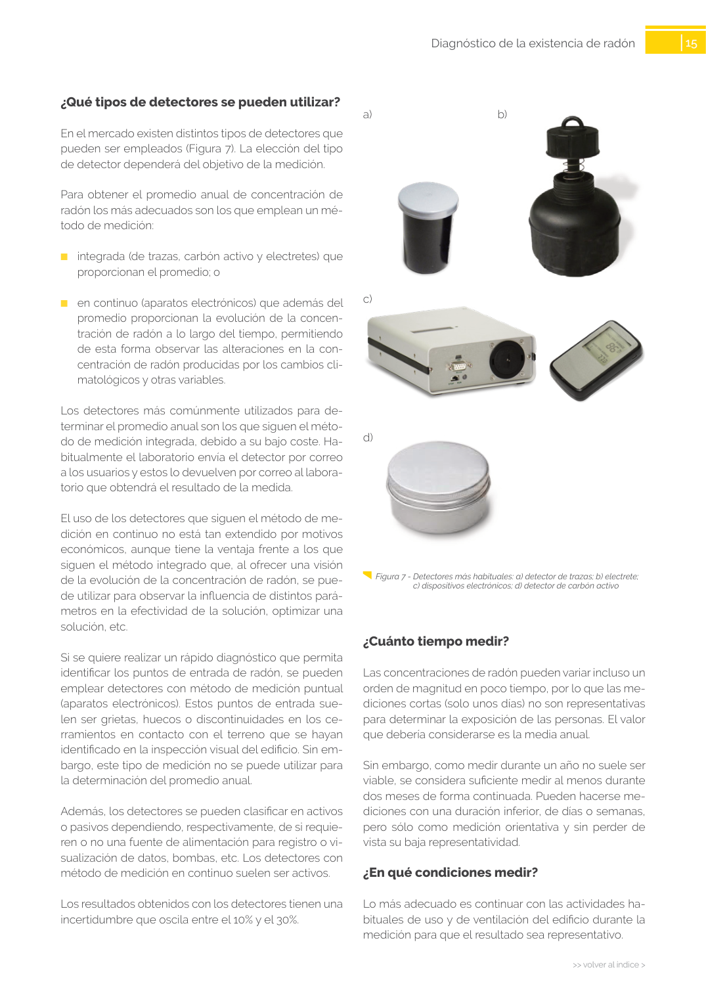

GUIA · ¿Cuánto tiempo medir? · versión sin-fecha · capa guia
Formatos: JSON compacto · Markdown · PDF fuente
Ámbito del documento · texto del ámbito · documento y tablas
Tipo: tablas, figuras · nivel 3 · sección estimada: Capítulo · padre: a0037
¿Cuánto tiempo medir? Las concentraciones de radón pueden variar incluso un orden de magnitud en poco tiempo, por lo que las me diciones cortas (solo unos días) no son representativas para determinar la exposición de las personas. El valor que debería considerarse es la media anual. Sin embargo, como medir durante un año no suele ser viable, se considera suficiente medir al menos durante dos meses de forma continuada. Pueden hacerse me diciones con una duración inferior, de días o semanas, pero sólo como medición orientativa y sin perder de vista su baja representatividad.

PDF fuente redistribuible: copia fiel enlazada en esta página (SHA256 verificado).